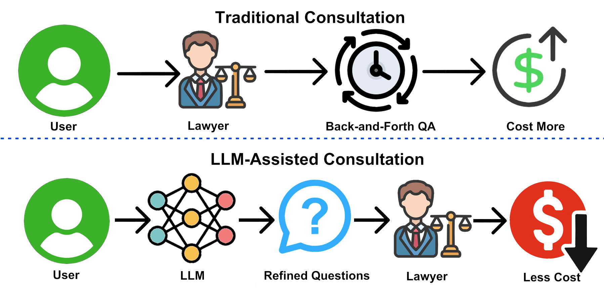
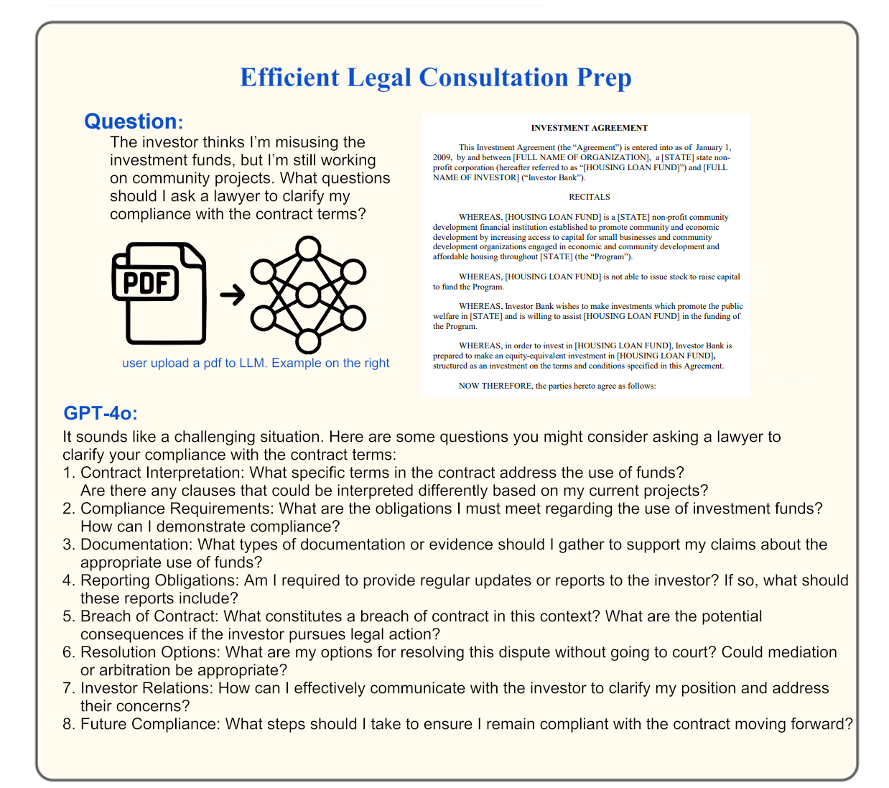
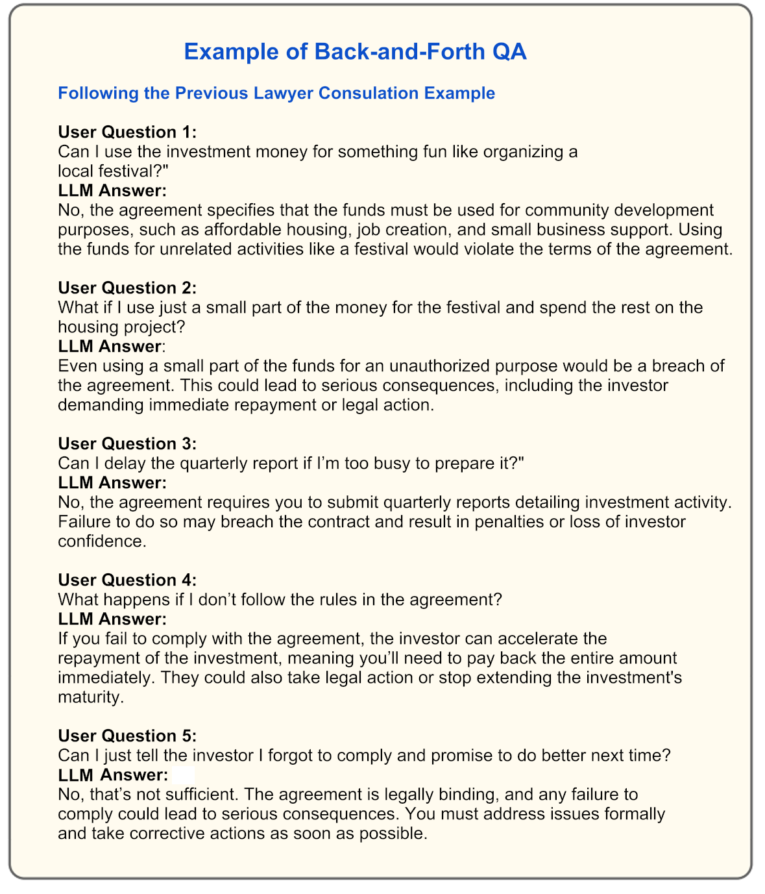

Efficient Legal Consultation Prep
Overview
Illustrates how using an LLM to refine questions before legal consultations can improve communication efficiency with lawyers, saving time and reducing costs.
Lawyer Consultation Cost Comparison
{kind=link}

Comparison of consultation costs with/without LLM question refinement
Key points:
Traditional workflow involves repetitive Q&A leading to higher fees
LLM-prepared questions enable focused discussions
Potential time reduction from hours to fractions
Significant cost savings through efficiency gains
Example of Question Refinement
{kind=link}

Fig. 5 LLM-generated compliance questions for investment fund usage
Use case scenario:
The LLM assists by generating a list of specific, refined questions to present to the lawyer, reducing the consultation time and ensuring that key contract compliance areas are covered.
Back-and-Forth QA Analysis
{kind=link}

Fig. 6 Example of costly repetitive questioning with lawyers
Key Inefficiencies
Repetitive Questions: Similar queries about fund misuse
Basic Clarifications: Fundamental term explanations
Unrealistic Proposals: Over-simplified compliance ideas
High Costs: Lawyer time charges accumulate quickly
LLM Benefits
Cost Reduction: Free handling of basic queries
Preparation: Structured question organization
24/7 Availability: Instant response capability
Expertise Bridging: Compensates for legal knowledge gaps